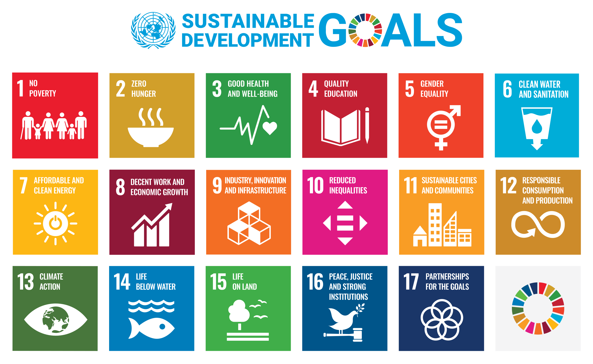

Unsere Hausspezialität? Die Entwicklung erstklassiger Webanwendungen! Webapplikationen sind wie massgeschneiderte Werkzeuge für das digitale Zeitalter – dynamisch, zugänglich und voller Möglichkeiten. Bei uns dreht sich alles darum, Ihre Ideen zum Leben zu erwecken und Ihre Visionen in pixelgenaue Realität zu verwandeln. Von der Konzeption bis zur Umsetzung stehen wir Ihnen zur Seite, um Ihre Visionen erfolgreich umzusetzen und Ihr Unternehmen voranzubringen!
Wir legen Wert auf die Schaffung von intuitiven und visuell ansprechenden Benutzeroberflächen (UI). Dabei liefern wir aussergewöhnliche Benutzererlebnisse (UX), erstellen benutzerfreundliche Navigation und sorgen für ansprechende Interaktionen und nahtlose Übergänge.
Datenschutz liegt ist bei uns Grossgeschrieben und wir legen grossen Wert auf Ihre und die Daten Ihrer Benutzer! Die Daten werden ausschliesslich auf sicheren Servern in der Schweiz🇨🇭 gespeichert.
Sicherheit hat höchste Priorität bei Cybethics. Wir machen diverse Empfehlungen in sicherheitsrelevanten Bereichen der Softwareentwicklung, wie Daten-Verschlüsselung, sichere Benutzer-Authentifizierung und Schutz vor gängigen Sicherheitslücken.
Jahre Entwicklungserfahrung
Technologien kennengelernt
Zertifizierungen erlangt
technologische Möglichkeiten
Softwarelösungen können Unternehmen dabei unterstützen, ihre Geschäftsprozesse zu optimieren, die Effizienz zu steigern und die Rentabilität zu verbessern. Durch die Entwicklung massgeschneiderter Software können Unternehmen massgeschneiderte Lösungen erhalten, die ihre spezifischen Anforderungen erfüllen und ihnen einen Wettbewerbsvorteil verschaffen.
Vielleicht brauchen Sie gar keine Applikation, sondern wären mit viel weniger zufrieden. Unsere Dienstleistungen umfassen auch folgende Bereiche:
Es braucht nicht immer komplexe Applikationen um Ihnen das Leben einfacher zu machen. Sogenannte serverlose Funktionen sind eine effiziente Möglichkeit, um schnell und kostengünstig einfache Automatisierungen zu erstellen.
Wir erleichtern die nahtlose Integration von Drittanbieter-APIs in Ihr Software-Ökosystem, ermöglichen einen effizienten Datenaustausch und erweitern die Fähigkeiten Ihrer Anwendungen. Unsere Expertise in der API-Integration gewährleistet reibungslose und sichere Interaktionen mit externen Systemen und verbessert Ihre Geschäftsprozesse.
Unsere DevOps-Experten optimieren Ihre Softwareentwicklung und den Bereitstellungsprozess, sodass Sie schneller und zuverlässiger veröffentlichen können. Wir implementieren Containerisierungstechniken mit Plattformen wie Docker und Orchestrierungswerkzeugen wie Kubernetes, um Skalierbarkeit, Portabilität und einfache Verwaltung zu gewährleisten.
Bei Cybethics stehen Ethik und Vernunft im Mittelpunkt all unseres Handelns. Es ist mehr als ein Name; es ist das Spiegelbild unserer unerschütterlichen Verpflichtung zu Integrität und verantwortungsvollen Geschäftspraktiken
c
y
b
e
r
e
t
h
i
c
s

Bei alledem kann Cybethics nicht alle Ziele verfolgen, sondern priorisiert stattdessen fünf der 17 Ziele. Die Auswahl dieser fünf Ziele basiert auf zwei Hauptfragen:
Nachdem wir die Grundlage für unsere Überzeugungen geschaffen haben, sind die folgenden fünf Ziele unsere Prioritäten.